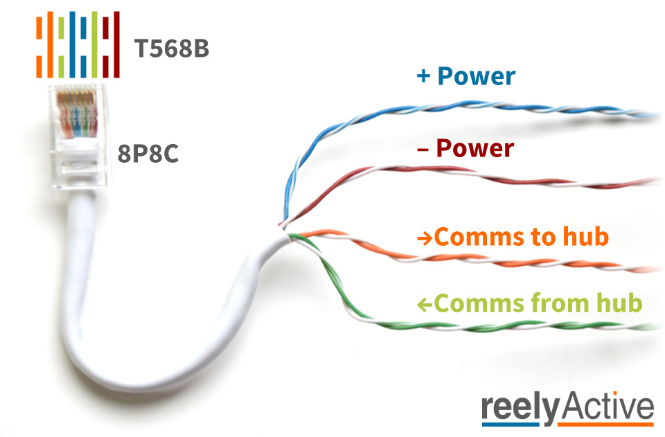
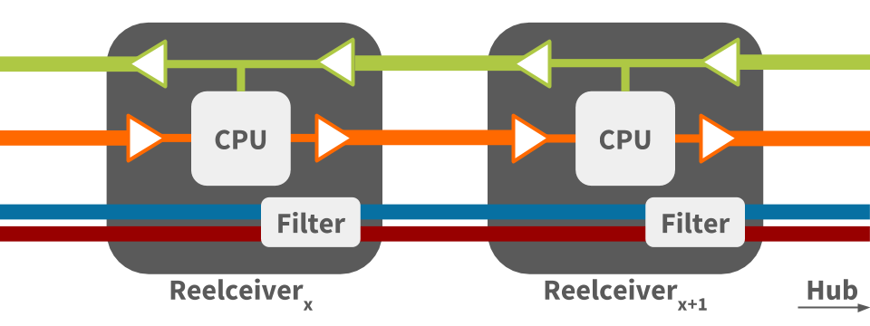
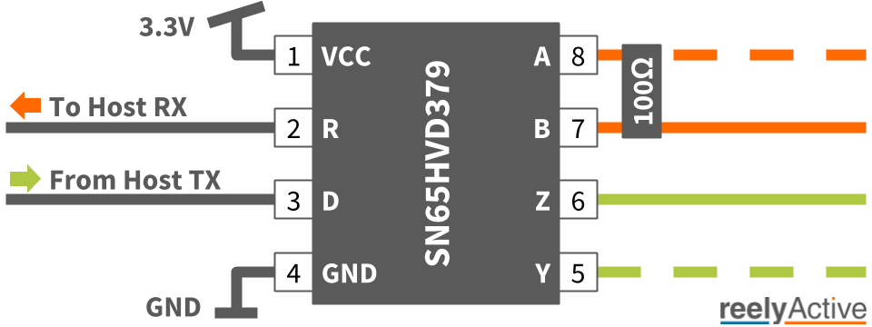

The Reel Architecture and Protocol
Daisy-chaining sensors using standard network cables
In 2012, we at reelyActive introduced the reel, a novel concept which allows sensors to be quickly and easily daisy-chained using standard network cables which provide both power and communications. Based on the co-founders previous experience with wireless RFID readers and camera infrastructure deployments — power and networking were always the primary point of failure — the reel was designed to deliver both power and communications reliably and cost-effectively over a single, ubiquitous cable.

In 2013, we chose to publish, rather than patent, the reel concept. Our scientific article Towards a Simple, Versatile, Distributed Low-Power Wireless M2M Infrastructure was presented at the 1st IEEE M2MCIP Workshop in Sydney, Australia. We'll spare the scientific details here and instead focus on the practical aspects of deployment and integration of the reel.
The name reelyActive is indeed a combination of reel and active — the latter referring to active radio-frequency identification.
The ubiquitous "network" cable
The reel relies on a ubiquitous cable type consisting of four unshielded twisted pairs (UTP) of insulated wires with 8P8C plugs on either end. These are commonly generalised as "network" cables. Specifically, the reel requires the following:
- Cat5e or equivalent cable
- 8P8C (colloquially — but unofficially — RJ45) plugs following the T568B wiring scheme
Indeed, "network cables" rolls off the tongue much better than "Cat5e with T568B 8P8C plugs", and the following image should provide clarity.

Reel ≠ PoE
It's not Power over Ethernet.
It's not even Ethernet!
While the reel is inspired by PoE Alternative B (power over spare-pairs), it in fact uses RS-422 rather than Ethernet and supports voltages between 5VDC and 45VDC as we'll detail below. Should you accidentally connect a reelceiver to standardised PoE power sourcing equipment (PSE) — it happens! — rest assured that both devices are designed to fail-safe.
Power pairs
The blue and brown pairs carry power from a single source to all devices on the reel. The blue pair is positive and the brown pair is negative. "Brown is ground" can be a helpful mnemonic.
| Condition | Voltage | Max reel length |
|---|---|---|
| Minimum operational potential across blue-brown | 5VDC | Several metres |
| Recommended potential across blue-brown | 24VDC | >100m (observed) |
| Maximum operational potential across blue-brown | 45VDC | >1km (theoretical) |
| Absolute maximum potential across blue-brown | 60VDC | N/A (non-operational) |
Applied (non-transient) potential above 60VDC may damage the devices on the reel.
Recommendations
- check each cable for compliance with T568B
- check each cable for isolation between blue and brown pairs
- use a certified power supply from an established vendor with:
- over voltage protection
- over current protection
- short circuit protection
Communications pairs
The orange and green pairs carry balanced serial communications from reel to hub and from hub to reel, respectively. Communication respects the RS-422 technical standard which provides reliable differential signalling over long distances.
Recommendations
- check each cable for compliance with T568B
- limit the length of any single cable in the reel to 100m
Should you intend to push the limits of RS-422, this TI Application Report will likely prove helpful.
Reel architecture
The following diagram illustrates the reel architecture for two daisy-chained reelceivers.
Reel communication architecture
The above diagram illustrates the following:
- each reelceiver acts as a RS-422 repeater for communication in each direction
- communication from hub to reel (green pair) is broadcast to all reelceivers simultaneously
- communication from reel to hub (orange pair) is processed by each reelceiver in turn
Reel power architecture
The above diagram illustrates how power is routed from reelceiver to reelceiver (blue and brown pairs), passing through a filter at each. The filter is a passive circuit providing:
- high-frequency noise reduction
- voltage spike suppression
- EMI absorption
Serial interface
Because it uses asynchronous serial communication, the reel can communicate with almost any computer serving as a hub or gateway. Any computer with a UART, which includes even the simplest 8-bit microcontrollers, can communicate with the reel. The serial communication parameters are as follows:
| Parameter | Value |
|---|---|
| Bit rate | 230400 bps |
| Data bits | 8 |
| Parity | None |
| Stop bits | 1 |
If the host computer natively supports RS-422 and/or RS-485, interfacing is as simple as connecting the orange and green pairs to the RX and TX terminals respectively. The orange pair should be terminated with a 100 Ohm resistor (across the pair).
If the host computer has but a UART, a simple interface circuit consisting of a single active and passive component is required, for example the following.
SN65HVD379 reel interface
Microcontrollers which support 3.3V I/O can connect to the reel with the following circuit comprising a TI SN65HVD379 and a 100 Ohm resistor.
A reference design of this circuit, t2-reel-module, which interfaces with a Tessel 2 hub, is available as open hardware on Upverter, and can be easily adapted to other microcontrollers. Please let us know if you do so we can share with the community!
Reel packet decoding
See barnowl